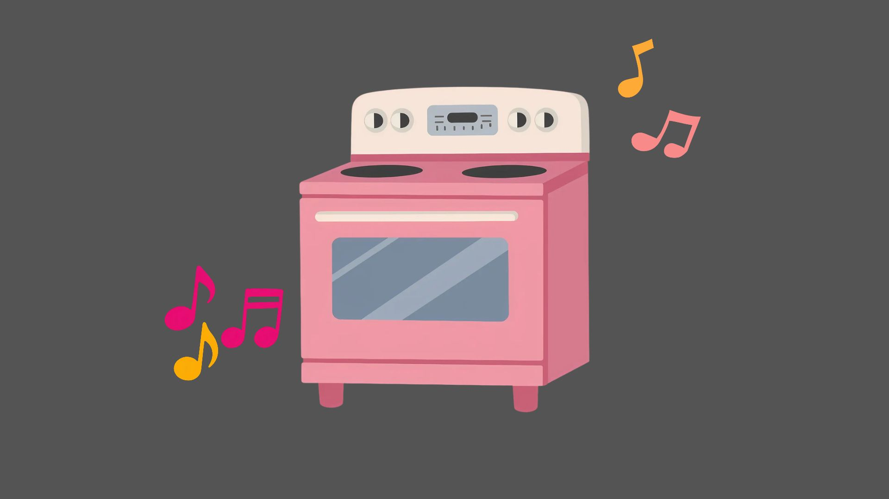

Baking and music together is an amazing combo
October 04, 2026 by Janae Boreland

I love baking in my free time, it gives me something to be excited
about. Along with doing that, I love listening to music while I
bake. Together they both help calm my nerves.
One of my favourite things to bake is Bread Pudding, I love bread
pudding. I love when it's moist, yet holds its shape, and it doesn't
have an excessive amount of raisins. Since I said I love music while
baking, why not speak of an artiste. One artiste whose music I love
is Jhene Aiko. She has music for any type of emotion one may be feeling
and overall her music speaks to me and can match any vibe I have.
Nothing like a good show or movie
October 05, 2026 by Janae Boreland

When I'm bored and want to relax, shows and movies always do me right.
I love a good show or movie that I can just lie down and watch, whether
it's one that makes me smile, cry or laugh. Overall a good watch always
does the trick to take my mind off what's around me.
A few genres of shows or movies I love are romance, comedy and action. I
like these because love stories always make me feel warm, comedy cheers
me up no matter what, and action always has me on edge for what's going
to happen next. One genre I'm not a big fan of is horror. Any serious
horror movies that are genuinely scary make me scared and anxious, so
I typically stay away. If it's a comedy horror that's not that scary though,
I can handle those. In the end, I love a great show or movie.